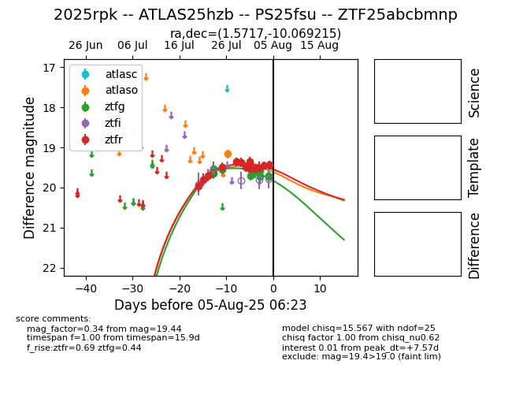

Target 2025rpk at 2025-08-05 07:33, see:
FINK: fink-portal.org/2025rpk
Lasair: lasair-ztf.lsst.ac.uk/objects/2025rpk
ALeRCE: alerce.online/object/2025rpk
TNS: wis-tns.org/object/2025rpk
YSE: ziggy.ucolick.org/yse/transient_detail/2025rpk
alt names
ZTF25abcbmnp (ztf,fink)
2025rpk (tns,yse)
ATLAS25hzb (atlas)
PS25fsu (panstarrs)
coordinates:
equatorial (ra, dec) = (1.5717,-10.06922)
galactic (l, b) = (88.8342,-69.89308)
photometry
last atlaso=19.17, ztfg=19.72, ztfr=19.44
1 atlaso, 10 ztfg, 14 ztfr detections
